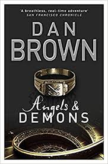

|  | CERN director Maximilian Kohler discovers one of the facility's physicists, Leonardo Vetra, murdered, his chest branded with an ambigram of the word "Illuminati". Kohler contacts Robert Langdon, an expert on the Illuminati, who determines that the ambigram is authentic. Kohler calls Vetra's adopted daughter Vittoria home and it is ascertained that the Illuminati — an ancient anti-religious organization thought extinct — have stolen a canister containing antimatter, a substance with destructive potential comparable to a nuclear weapon. When at CERN, the canister is stored in a unique electrical charger which ensures the antimatter's stability but when removed its back-up battery provides power for 24 hours after which the antimatter would fall out of suspension and, on coming into contact with the physical matter of the container, explode. The canister is located somewhere in Vatican City, with a security camera in front of it, as its digital clock counts down to an explosion due to occur at midnight, which will wipe out the Vatican. |